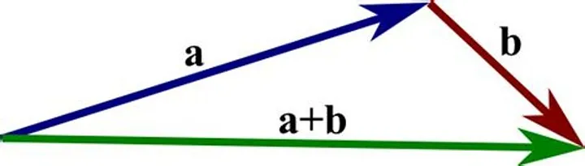
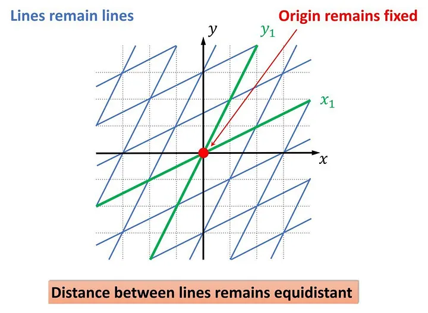
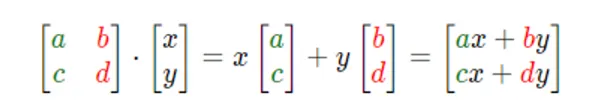

← ← ← 5/18/2024, 9:00:15 AM | Posted by: Lorenzo Battistela
6 min read
Linear algebra is the branch of mathematics that concerns linear equations, maps and their representations in vector spaces and through matrices.
This technical definition and most proofs, concepts and theorems that we learn hide the visual beauty of linear algebra. My goal in this article is to arouse curiosity so you too can enjoy this subject as much as I do after seeing it what it meant.
Vectors can be interpreted differently at some fields. For example, as an arrow, as a list of values, a geometric object etc. For now, think of it as an arrow, but inside of a coordinate system xy (cartesian plan). The tail of the vector sits at the origin of our system. The coordinates of a vector basically is telling us how to get from the tail of the vector to its tip.
For example, a vector v = [1, 2] would have its tail on the origin and its tip at (1, 2) in our cartesian plan.
It is important to understand that we can do operations with vectors too. For example, we can add the vectors v = [1, 2] and w = [3, 4] . The sum of this vectors is [1 + 3, 4 + 2] = [4, 6] . But what this represent visually?
Try to visualize this in your mind: adding two vectors means getting the tail of the second vector, placing it in the tip of our first vector and then creating a new vector that goes from the origin to the tip of our sum.

We can also scale a vector. For example, 4 * [1, 2] is [4*1, 4*2] = [4, 8] . This is visually easier to think. If you scale a vector by a factor of 2, it will double its length. If you scale it by 1/2, it will be half the initial length.
You can think about vectors in other way. Think about two default vectors, one pointing to the right and other pointing up (lets name them â and ê. That said, you can assume, for example, that the vector [3, 2] simply means that we are stretching â by a factor of 3 and ê by a factor of two. You can describe every possible two-dimensional vector this way, and also use different base vectors, just make sure they dont line up and they != 0 (think about why they cant line up). Linear combinations are solutions for linear systems!
The set of all possible vectors you can reach with linear combinations of a given pair of vectors is called the “span” of those two vectors. If two vectors are lined up, we say they are linear dependent. We say this because if we remove one of them, the span would still be the same. We can also have span in more dimensions, like 3d.
Now we are getting into the good stuff. Linear transformations are functions (and abstractions, but we can discuss this later), that take some vector as input and spit out another vector as output. Linear transformations are movement. We have some math properties that guarantees us that a transformation is linear, but visually speaking, for a transformation to be linear, the grid lines remain parallel and evenly spaced.

Let’s try to compute a transformation now. Remember our default vectors, â and ê? We will use them. Suppose L(â) = [1, -1], L(ê) = [3, 1]. We can compute where any vector goes knowing the transformation. Lets discover where the vector v =[1, 2] would go.
L(v) = L(1*â + 2*ê)
L(v) = 1* L(â) + 2 * L(ê)
L(v) = (1 * [1, -1]) + (2 * [3, 1])
L(v) = [1, -1] + [6, 1]
L(v) = [7, 0]
There we go! Now we know that our vector v will land on (7,0)! Amazing!
If you’re given a 2x2 matrix describing a linear transformation, and a specific vector, and you want to know where the linear transformation takes that vector, you take the coordinates of that vector, multiply them by the corresponding column of the matrix, then add together what you get. This corresponds with the idea of adding scaled versions of our new basis vectors.

Ok, the computing part is nice, but let’s think about what all of this means visually. Linear transformations are telling us that we can model space and represent this modeling through matrices and operations. They are not limited to 2d plans, which means we can also transformate 3d plans, for example.
Take a minute and think about how many things you can do by transforming space linearly. This is what allow us to work so nicely with 2d and 3d animations, transforming space inside of a computer. It is essential to computer graphics. We can merge operations, perform compositions and do a lot more.
What if we could measure what a transformation do without knowing nothing but the transformation matrix?
Oh, we can do this! The determinant is pretty useful to understand how much a transformation stretch and squish things. Specifically, it measures the factor by the area of a region scaled after a transformation.
Imagine a transformation matrix [2, 0, 0, 2]. It scales â and ê by a factor of 2, and after the transformation the area that was a 1x1 square (because of â and ê) turned into a 2x2 square. The scaling factor is called the determinant of a matrix. I will not cover the calculation, but the determinant for our example is 4 (area was 1, turned into 4). A determinant can be negative, but since negative scaling is not a things, the negative sign indicates the orientation (think about negatives on a cartesian plane). In 3 dimensions, the determinant represents the factor by which the volume is scaled. If the determinant is 0, the plane turned into a line, which has no area.
The inverse of a matrix is cool too. The inverse of a matrix simply represents the inverse operation that the previous transformation did. If the first one apply a clockwise rotation by 45 deg, the inverse would be a counterclockwise rotation by 45deg.
Knowing this, if we have a vector x, and the matrix, we can always perform the inverse operation to know the vector x before the transformation.
Linear algebra is visually beautiful, and we can understand a lot of the things we learned in high school or uni without memorizing proofs and rules. I started studying it by curiosity, but it is really amazing to thing how this affects computer graphics and linear systems. I did not covered a lot more and talked only about simple and general stuff, but I intend to write more about it.
If you liked this article, follow me on twitter! @Lorenzoowb